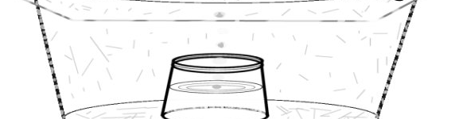
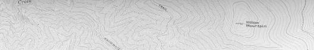
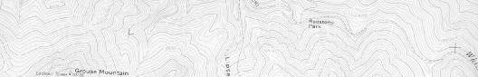

DESERT EMERGENCY
SURVIVAL BASICS
Heartache and Heartburn
By Jack Purcell
ISBN 0-9743852-2-0
Copyright © 2003 by Jack Purcell
All Rights Reserved.
No part of this book may be reproduced, stored in a retrieval system, or transmitted, in any form
or by any means, electronic, mechanical photocopying, recording, or otherwise, without the prior
written permission of the author or publisher.
Jack Purcell
P.O. Box 196
Grants, NM 87020
Phone (505) 240-1309
Email: petrodactl@zianet.com
NineLives Press
P.O. Box 10041
Olathe, KS 66051
Visit webpage:
jackpurcellbooks.us
to view other books by Jack Purcell

DESERT EMERGENCY
SURVIVAL BASICS
Heartache and Heartburn
This book is dedicated to Gale Kloesel, a man who knows the meaning of the word, friend,
And
To Larry Austin,
Division Director, Emergency Management and Preparedness Division,
New Mexico Department of Public Safety.
A man who knows the meaning of the word, survival.
Jack Purcell 2003
DESERT EMERGENCY SURVIVAL BASICS:...................................................................................... 4
CLOTHING............................................................................................................................................... 6
WATER..................................................................................................................................................... 7
THE BODY POLITIC..................................................................................................................................... 9
NAVIGATION TOOLS................................................................................................................................... 9
THE FIRST SYMPTOMS OF TROUBLE.......................................................................................................... 17
COMMUNICATIONS................................................................................................................................... 24
SURVIVAL AND EMERGENCY SUPPLIES:................................................................................................... 25
RANCHERS, RAINBOW PEOPLE, DESERT RATS, AND OUTFITTERS............................................................... 30
CRASH KITS.............................................................................................................................................. 33
CONCLUSION............................................................................................................................................ 34
DESERT EMERGENCY SURVIVAL BASICS: HEARTACHE AND HEARTBURN
The potential range of human experience includes finding ourselves in unanticipated dangerous situations. Most of those situations have been examined minutely and described in print in the form of survival manuals. Desert survival is not an exception. Excellent books are available to explain primitive survival in the desert southwest duplicating lifestyles of Native Americans a thousand years ago. That is not the intent of this book.
A few decades ago I had an acquaintance with a man named Walter Yates.
Walter had the distinction of surviving a helicopter crash in the far north woods by jumping into a snowdrift before the impact. He managed to survive winter months with almost nothing except the clothes on his back when he jumped.
Walters experience was a worthy test of human potential for emergency survival
in extreme conditions. The margin for error was microscopic. The reason he survived rested on his ability to quickly detach his mind from how things had been in the past, how he wished they were, and accept completely the situation
he was in. He wouldnt have made it out of those woods if he couldnt rapidly
assess his new needs and examine every possibility of fulfilling them. Its all in
the mind, he once told me.
The margin for error in the desert is also narrow. That margin is dehydration.
Extremes of temperature are also a factor, but they are more easily managed than the needs of the human body for water. Anyone who survives an unanticipated week in desert country did so by either having water, by carrying it in, or finding it.
Over the years Ive followed a number of search and rescue accounts and
discussed the issue with searchers. The general thinking among those workers is that a person missing in the desert southwest should be found or walk out within three to five days. After three days the chances for live return spiral downward. Returns after five days are lottery winners. When a missing person isnt found within a week, its usually because hes been dead for five days.
This book is to assist in avoiding situations that lead to the need to survive those crucial three days, and to provide the basics of how to walk out and how to find water in the desert southwest. If you need the emergency information here it will be because you became lost, stranded by mechanical failure, or physically
incapacitated. I wont address the bugs and plants you might find to eat. If you
have water youll survive without eating until rescue.
This was originally written as an addendum to the Lost Adams Diggings book. At the time I wrote it I had a close association with New Mexico State Search and
Rescue (SAR). The State Search and Rescue Coordinator (SARC) knew what I was doing. I had a special arrangement with him because I was spending a lot of time in remote canyons. If something delayed me there I didnt want them to send out the SAR guys to look for me.
One day in the coffee room SARC asked me about the book I was writing. I explained The Lost Adams Diggings to him and how the information available in the past was sketchy.
So youre writing a book thats likely to cause flatlanders to go out into the desert searching for this thing?
I thought about it a moment before I answered. It might. A lot of people would have tried anyway, but this book might bring in some who wouldnt have come otherwise.
SARC glared at me. His whole world revolved around flatlanders getting lost in the mountains or desert. Several times every month theyd scramble the forces to try to locate someone misplaced. Sometimes its a brain surgeon from Houston who got himself mislocated mountain climbing on the east face of Sandia
Mountain within sight of Albuquerque. Other times a physicist from California gets off the pavement in the desert and loses his bearings. Sometimes SAR arrived in time to save their lives. New Mexico back country can be unforgiving.
If youre going to write a book like that youd damned well better put in a chapter on desert survival! I dont want to spend the next five years dragging the bodies of your readers out of the arroyos in body bags.
Heres the result of that conversation:
I advise you not to search for the Lost Adams Diggings. If you do, however, you need to read this chapter.
The New Mexico Search and Rescue (SAR) Coordinator (SARD) sneers because people in trouble in the wilds nowadays think they can call SAR with their cell phones, but only after they discharge the batteries on the GPS (Global
Positioning System) so they cant give coordinates of their location.
What he says is only partly true. People who cant program a VCR probably wont learn to use a GPS, either. And cell phones have a nasty habit of flashing
NO SERVICE in little red letters when you try to use them in remote areas.
Im including a few basic elements of back country survival for New Mexico and
Arizona which might or might not be influenced by technology. Those who havent experienced the painful bite of desert beauty might find these suggestions helpful.
CLOTHING
HEADGEAR:
Wear one. The reason for the sombrero is the desert sun. Necessity was the real mother of the invention, despite the spiffy looks. A gimme cap will do if you turn the bill forward to shade your nose from sunburn and your eyes from glare.
Wear a handkerchief under the back to protect your neck and give you a spicy
Beau Geste look. Save the backward and sideway bills for back in town when you are planning your next drive-by.
LONG TROUSERS:
A must. Protect your legs from the sun, and from whatever else bites, scratches, stings, sticks, or festers. This includes almost everything in the desert.
LONG SLEEVES:
They help too. You can roll them up if you like, but rolled down they protect your arms the way long pants protect your legs.
FOOTWEAR:
1)
Sandals are great, cool, and otherwise nice in the right environment.
Walking in the desert isnt one of them. They sunburn the tops of your feet and allow stickers and thorns easy access to the sides. Your feet will cook top side, blister bottom side, and bleed in between.
2)
Cowboy boots and Wellingtons ride too generously on your feet. Youll blister, slip around on rocks, and your feet will have lots of room to explore without going anywhere. No ankle support and general poor footing. A hot, bad choice.
3)
Sneakers, at least, with socks, are going to be your blessing if you get into trouble and have to walk a long way. When your shoes give out, youll be finished walking. Good hiking boots with waffled soles and ankle support are better.
WATER
H20 you bring with you:
Carry 10-15 gallons of extra water in the vehicle, only for use in emergencies.
Carry more water than you think you could possibly need in the daypack every time you plan to get out of sight of the vehicle or camp. A lady I once knew, an experienced backpacker, left her toddler son and hubby to step behind a bush to pee. Didnt carry anything with her. They never found her body, and she hasnt been seen since. Disorientation comes easy in rough country, even to seasoned woodsmen and desert rats.
Water you find in cow-tanks, streambeds, pools, tinajas, cienagas, etc:
Its worthwhile to carry a First Need or other similar water filter with filtration down to a couple of microns for protozoa. Halizone or iodine tablets are also useful for virus removal. Boiling works as a last resort, though it wont remove the bug larvae carcasses. Water you find in the desert is usually considered the property of a variety of other creatures, most of whom have already filed a claim.
Water Filters:
Desert water tends to have a lot of nitrogen from critter urine, and heavy microorganism counts. It also usually carries a massive organic loading from the swarms of visible animalcules taking swimming lessons. Filters will help remove a lot of this. If your inclinations dont include providing them with a house and 40 acres in your lower gut, a filter is a good alternative. Introducing new flora and fauna to your viscera works about as well as bringing a new feline into a house full of tomcats.
If you havent experienced Giardia, ask someone who has. Theyll have vivid memories they want to share.
Solar Still
If you are stationary in the desert one thing can extend your survival long enough to have you eating grasshoppers and lizards. Water. In the southwestern US desert the number of options available for getting water is limited. Most of the cactus listed as sources in survival manuals of the past the past are rare and protected by Federal Environmental Statutes. If you cant find a windmill you are


limited to using methods of drawing water molecules trapped between the soil particles and capturing it for your own use. The desert solar still is the best method Ive ever seen for accomplishing this end. The still will produce approximately a quart of pure water per day in baked hardpan soil. In a moist, sandy arroyo bottom it will produce much more. Four such stills will yield enough water to keep a human alive long enough to die of starvation.
1) Excavate a hole in a channel bottom if you can find one. The top opening diameter of the hole needs to be small enough to allow complete coverage by your plastic sheet. The inside surface area of the hole has a direct bearing on how much water is produced. Larger surface areas produce more water. Damp soil gives more water.
2) Place a 1 quart or larger container in the bottom-center of the hole.
3) Secure the plastic sheet over the top of the hole with a few inches overlap on the sides. Leave enough slack in the sheet to allow it to droop 2-3 inches. Pile a berm of soil or sand over the overlap areas to seal the air inside the hole.
4) Place a small rock on the plastic sheet directly over the opening of the jar.
This will create an incline on the bottom surface of the plastic with the lowest point being over the jar youll be catching water in.
5) Empty the jar once each day in the evening. Opening the hole more often will allow moist air to escape into the desert air.
Water from the soil will evaporate from the freshly excavated walls. The moisture content of the air inside the hole and the temperature difference between the outside atmosphere and the air inside the hole will cause moisture to condense on the bottom side of the plastic sheet. The weight of the rock on the sheet will cause condensation to flow to the lowest area, just over the opening to the jar and drip downward to be captured.
If you arent squeamish youd be well advised to dig your latrines in the vicinity of the still. The body waste moisture you throw off will increase the moisture in the soil around the still, thereby providing more evaporation, more water.
If you dont have a bottle or jar to catch the water a freezer bag or square of plastic will do the job. You just have to erect a frame to hold the top up and keep it open so the water can drip inside. A small circle of rocks at the bottom of the hole with a square of plastic laid over it overlapping the rocks will do. Youll think of a way to get it out of the hole without spilling a single drop.
The Body Politic
Heatstroke: Electrolyte depletion of the human body. Sunshine, heat, and liquid deprivation. Salt tablets probably dont make much sense in normal life, but in the desert, they restore needed electrolytes to your body. These wont be provided by most water youd care to drink, no matter how loaded with microorganisms. Perspiration evaporates quickly in arid climates. Your body is throwing off a lot of salt, waste and other juice when it perspires so heavily. Salt tablets help restore some of it.
Hypothermia: Know what it is, prepare for it, watch for it, and avoid it. The desert gets cold at night. But a sweaty rest in a cool breeze can do it on a hot day.
Navigation Tools
Avoid becoming a lost soul.


Maps:
Terms: You need to be familiar with three terms before discussing back country
maps. Scale and Minutes refer to the way the map relates horizontally to the
country you are in. Contour refers to the method the map uses to communicate
vertical information about the terrain.
Scale: